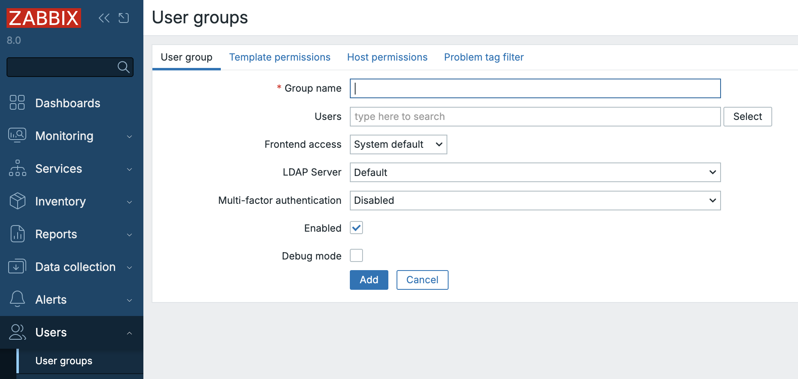
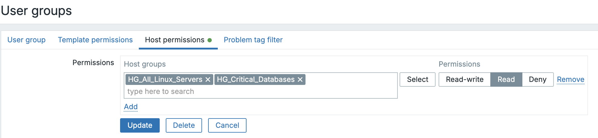
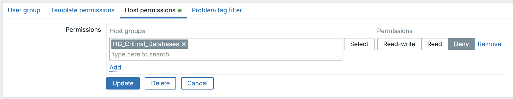
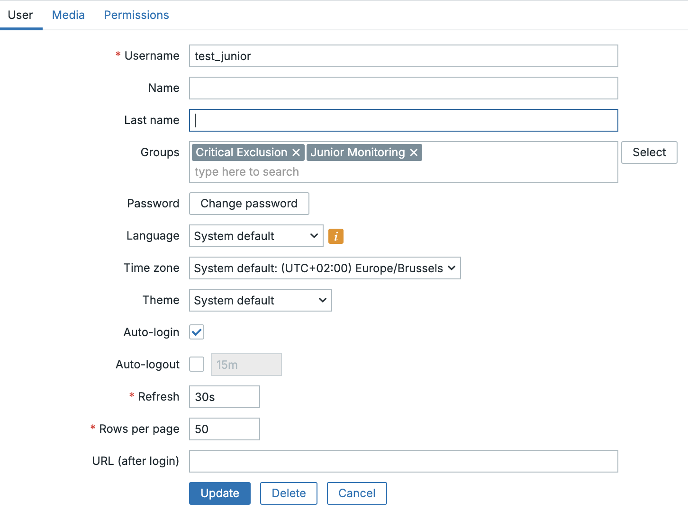
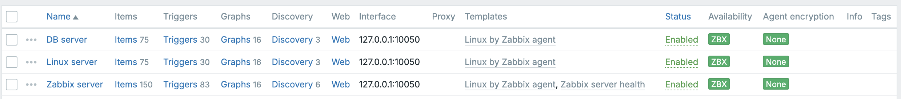

User Groups
Em qualquer plataforma de monitoramento empresarial, o estabelecimento de controle de acesso baseado em funções (RBAC) é fundamental para manter a segurança e a clareza da responsabilidade operacional. Para o Zabbix, esse controle é construído sobre o conceito fundamental de Grupos de usuários.
In Zabbix 8.0, user groups serve as the primary mechanism for assigning permissions and structuring access to the monitored data and configuration entities. This chapter details the function of user groups, guides you through their configuration, and outlines best practices for applying them in a robust, real world deployment.
A função de um grupo de usuários
Um grupo de usuários no Zabbix é uma coleção lógica de contas de usuários individuais. Em vez de gerenciar as permissões de centenas de usuários individualmente, o Zabbix exige que os usuários sejam atribuídos a um ou mais grupos. Os direitos de acesso, como a capacidade de visualizar grupos de hosts, configurar modelos ou ver tags de problemas específicos, são concedidos no nível do grupo .
Essa arquitetura centrada em grupos oferece vários benefícios importantes:
- Gerenciamento simplificado: Os direitos de acesso são gerenciados pela função (por exemplo, "Engenheiros de rede", "Administradores de banco de dados") em vez de por usuário individual.
- Consistência: Garante que todos os usuários com a mesma função possuam um conjunto consistente e padronizado de permissões.
- Segregação de funções: Permite a separação clara entre o acesso de visualização (somente leitura) e de configuração (leitura e gravação).
Definição técnica: Os grupos de usuários permitem o agrupamento de usuários para fins organizacionais e para a atribuição de permissões aos dados. As permissões de visualização e configuração de dados de grupos de hosts e grupos de modelos são atribuídas a grupos de usuários, não a usuários individuais. Um usuário pode pertencer a qualquer número de grupos.
Configuração de um grupo de usuários
No Zabbix, os grupos de usuários são definidos e mantidos exclusivamente por meio do front-end da Web. O procedimento permaneceu praticamente inalterado entre a versão 8.0 e as gerações anteriores, garantindo uma experiência de configuração familiar para os administradores.
Criação de grupos e atributos gerais
- Navegue até Administration → User groups.
- Clique em Create user group (ou selecione um grupo existente para modificar).
- O formulário de configuração é dividido em quatro guias essenciais: Grupo de usuários, Permissões de modelo, Permissões de host, e Filtro de tag de problema.

2.20 menu do grupo de usuários
O grupo de usuários Guia
Essa guia inicial define as propriedades gerais do grupo e sua associação:
- Nome do grupo: Um identificador exclusivo e descritivo (por exemplo,
NOC-RO,System-Admins-RW). - Usuários: Adicione usuários existentes a esse grupo. Um usuário pode ser membro de vários grupos.
- Acesso ao front-end: Controla o método de autenticação para membros do
grupo. As opções incluem
Padrão do sistema,Interno,LDAP, ouDesativado(útil para contas somente de API ou para bloquear temporariamente o acesso ao frontend para uma função). - LDAP server: If
LDAPaccess is chosen, select the specific LDAP server configuration to be used for members of this group. - Multi-factor authentication (MFA): Select the method to be enforced for the group. If a user is a member of multiple groups, the most secure MFA setting will typically apply.
- Enabled: The master switch to activate or deactivate the group and its members.
- Modo de depuração: Uma configuração avançada e opcional que permite o registro detalhado de depuração para todos os membros do grupo no front-end do Zabbix.
Dica "O grupo de usuários de depuração" O Zabbix inclui um grupo de usuários
dedicado Debug pronto para uso. Em vez de ativar a opção de depuração para um
grupo de produção existente, é uma prática mais limpa simplesmente adicionar o
usuário necessário ao grupo pré-existente Debug.
Guias de permissão: Grupos de hosts e grupos de modelos
As permissões são configuradas com a atribuição de níveis de acesso a Host Groups e Template Groups. Essas entidades atuam como contêineres, o que significa que as permissões atribuídas ao grupo se aplicam a todos os grupos aninhados e a todas as entidades dentro deles.
Guia Permissões de modelo
Esta seção controla o acesso aos elementos de configuração dos modelos (itens, acionadores, gráficos etc.) por meio de seus grupos de modelos.
Para cada grupo de modelos atribuído, uma das seguintes permissões deve ser selecionada:
- Somente leitura: Os usuários podem visualizar a configuração do modelo e ver os dados derivados dele, mas não podem modificar ou vincular o modelo.
- Leitura e gravação: Os usuários podem visualizar, modificar e vincular/desvincular o modelo e suas entidades (itens, acionadores, etc.).
- Negar: Bloqueia explicitamente todos os acessos.
Guia Permissões de host
Essa guia funciona de forma idêntica à guia Template Permissions (Permissões de modelo), mas aplica os níveis de acesso a Host Groups e aos hosts contidos neles.
Filtros de tags de problemas: Acesso granular a alertas
A última guia de configuração, Filtro de tags de problemas, permite um controle detalhado sobre quais problemas (alertas) um grupo de usuários pode ver.
Isso é inestimável para ambientes corporativos em que os usuários só devem ser alertados sobre problemas relevantes ao seu domínio. Por exemplo, um administrador de banco de dados não deve se distrair com problemas de switch de rede.
Os filtros são aplicados a grupos de hosts específicos e podem ser configurados para exibição:
- Todas as tags para os hosts especificados.
- Somente problemas de correspondência de pares nome/valor de tag específicos.
Quando um usuário é membro de vários grupos, os filtros de tags são aplicados com a lógica OR. Se algum dos grupos do usuário permitir a visibilidade de um problema específico com base em suas tags, o usuário o verá.
???+ exemplo "Exemplo: Filtro do administrador de banco de dados" Para garantir que um grupo de administradores de banco de dados veja apenas os problemas relevantes, o filtro de tags de problemas seria configurado para especificar:
- **Tag name:** `service`
- **Value:** `mysql`
This ensures the user only sees problems tagged with `service:mysql` on the
host groups they have permission to view.
Permissões de modelo - Comportamento do front-end e limitações de edição
O comportamento da visualização Data collection → Templates e das telas de configuração do host está estritamente ligado ao nível de permissão do usuário nos grupos de templates. O Zabbix intencionalmente oculta os templates dos usuários que possuem apenas acesso Read-only. Isso ocorre por design, conforme descrito em https://support.zabbix.com/browse/ZBXNEXT-1070
| Ação ou elemento de tela | Somente leitura | Leitura e gravação | Descrição / Impacto |
|---|---|---|---|
| Exibir Coleta de dados → Modelos | ❌ | ✅ | Os usuários com acesso Read-only (somente leitura) não veem nenhum modelo. Os grupos de modelos são visíveis apenas para usuários com direitos de leitura e gravação. (ZBXNEXT-1070) |
| Configuração do modelo aberto | ❌ | ✅ | Não disponível para usuários somente leitura - os modelos são totalmente ocultos |
A regra de precedência: Negar sempre vence
A permissão efetiva de um usuário é o resultado da combinação dos direitos de
todos os grupos aos quais ele pertence. O Zabbix resolve essas permissões
sobrepostas aplicando uma hierarquia simples e rígida com base no nível mais
restritivo, a menos que um Deny esteja presente.
Hierarquia de precedência
A ordem de precedência é absoluta: Negar é a mais alta, seguida por Ler-escrever e, finalmente, Ler-apenas.
flowchart TB
A["Deny (highest precedence)"]:::deny
B["Read-write (overrides Read-only)"]:::rw
C["Read-only (lowest precedence)"]:::ro
A --> B
B --> C
classDef deny fill:#f87171,stroke:#7f1d1d,stroke-width:2px,color:white;
classDef rw fill:#60a5fa,stroke:#1e3a8a,stroke-width:2px,color:white;
classDef ro fill:#a7f3d0,stroke:#065f46,stroke-width:2px,color:black;
This precedence can be summarized by two core rules:
- Deny Always Overrides: If any group grants Deny access to a host or
template group, that user will not have access, regardless of any other
Read-onlyorRead-writepermissions. - Most Permissive Wins (Otherwise): If no
Denyis present, the most permissive right applies. Read-write always overrides Read-only.
| Scenario | Group A | Group B | Effective Permission | Rationale |
|---|---|---|---|---|
| RW Over RO | Read-only | Read-write | Leitura e gravação | The most permissive right wins when Deny is absent. |
| Deny Over RO | Read-only | Deny | Deny | Deny always takes precedence and blocks all access. |
| Deny Over RW | Read-write | Deny | Deny | The most restrictive right (Deny) overrides the most permissive. |
Permissions in the "Update Problem" Dialog
In Zabbix 8.0, the actions available in the Monitoring → Problems view (via the Update problem dialog) are controlled by two distinct mechanisms working in tandem:
- Host/Template Permissions: Governs basic access to the problem and whether configuration-level changes can be made.
- User Role Capabilities: Governs which specific administrative actions (like acknowledging, changing severity, or closing) are enabled.
The table below clarifies the minimum required permissions to perform actions on an active problem:
| Action in “Update problem” dialog | Required Host Permission | Required Template Permission | Required Role Capability / Notes |
|---|---|---|---|
| Message (add comment) | Read-only or Read-write | Same level as host | Requires the role capability Acknowledge problems. |
| Acknowledge | Read-only or Read-write | Same level as host | Requires Acknowledge problems. Read-only access is sufficient. |
| Change severity | Read-write required | Read-write if template trigger | Requires the Change problem severity capability. |
| Suppress / Unsuppress | Read-write required | Read-write if template trigger | Requires the Suppress problems capability. |
| Convert to cause | Read-write required | Read-write if template trigger | Requires Manage problem correlations capability. |
| Close problem | Read-write required | Read-write if template trigger | Requires Close problems manually capability. |
Best Practices for Enterprise Access Control
Building a maintainable, secure Zabbix environment requires discipline in defining groups and permissions.
- Adopt Role-Based Naming: Use clear, standardized names that reflect the
user's role and their access level, such as
Ops-RW(Operations Read/Write) orNOC-RO(NOC Read-Only). - Grant Access via Groups Only: Never assign permissions directly to an individual user; always rely on group membership. This ensures auditability and maintainability.
- Principle of Least Privilege: Start with the most restrictive access (Read-only) and only escalate to Read-write when configuration-level changes are an absolute requirement of the user's role.
- Align with Organizational Structure: Ensure your Host Groups and Template
Groups mirror your organization's teams or asset categories (e.g.,
EU-Network,US-Database,Finance-Templates). This makes permission assignment intuitive. - Regular Review and Audit: Periodically review group memberships and permissions. A user's role may change, and their access in Zabbix must be adjusted accordingly.
- Test Restricted Views: After creating a group, always log in as a test user belonging to that group to verify that dashboards, widgets, and configuration pages display the correct restricted view.
Example : User permissions
This exercise will demonstrate how Zabbix calculates a user's effective permissions when they belong to multiple User Groups, focusing exclusively on the core access levels: Read-only, Read-write, and Deny.
Our Scenario
You are managing access rights for a large Zabbix deployment. You need to grant general viewing access to all Linux servers but specifically prevent a junior team from even seeing, let alone modifying, your highly critical database servers.
You will have to configure two overlapping User Groups to demonstrate the precedence rules:
- Group A (Junior Monitoring): Grants general Read-only access to a wide host scope.
- Group B (Critical Exclusion): Applies an explicit Deny to a specific, critical host subset.
Host Group Preparation
Ensure the following Host Groups exist in your Zabbix environment:
- HG_All_Linux_Servers (The wide scope of hosts)
- HG_Critical_Databases (A subset of servers that is also within HG_All_Linux_Servers)
You can create them under Data collection → Host groups.
Configuring the User Groups
- Create Group A: 'Junior Monitoring'
- Navigate to Users → User groups.
- Create a new group named 'Junior Monitoring'.
- In the Host permissions tab, assign the following right:
- HG_All_Linux_Servers: Read-only (Read)
- HG_Critical_Databases: Read-only (Read)

2.21 Junior monitoring- Create Group B: 'Critical Exclusion'
- Create a second group named 'Critical Exclusion'.
- In the Host permissions tab, assign the following right:
- HG_Critical_Databases: Deny

ch02.22 Critical exclusionCreating the Test User
We will create the user first, then assign them to the groups.
- Navigate to User Creation: Go to Users → Users in the Zabbix frontend.
- Click Create user.
- Details:
- Username: test_junior
- Name & Surname: (Optional)
- Password: Set a strong password and confirm it.
- Language & Theme: Set as desired.
- Permissions: Select role
User roleas this has the type User (This is important, as 'Super Admin' bypasses all group restrictions). - Add the user to both group
Junior MonitoringandCritical Exclusion.
- Save: Click Add.

ch02.23 test userCreate the hosts
We will create 2 host a linux server and a db server.
- Navigate to
Data collection→Hosts. - Click on create host.
- Details:
- Host name: Linux server
- Templates: Linux by Zabbix agent
- Host groups: HG_All_Linux_Servers
- Interfaces: Agent with IP 127.0.0.1
- Save: Click Add.

ch02.24 Add hostsAdd a DB server exact as above but change :
- Host name: DB server
- Host groups: HG_Critical_Databases
- Save: Click Add.
This should work as long as you have your zabbix agent installed reporting back
on 127.0.0.1. This is how it's configured when you first setup the Zabbix
server with an agent.
Test the Outcome
Logout as the Super admin user and log back in as user test_junior.
When we now navigate to Monitoring → Hosts, we see that only the Linux
server is visible in the list of hosts. When we click on Select behind Host
groups we will only be able to see the group HG_All_Linux_Servers.
This table outlines the combined, effective rights for the user
test_junior (who is a member of both User Groups).
| Host Group (HG) | Permission via 'Junior Monitoring' | Permission via 'Critical Exclusion' | Effective Permission | Outcome |
|---|---|---|---|---|
HG_All_Linux_Servers |
Read-only | No Explicit Rule | Somente leitura | Access to view data is Allowed. |
HG_Critical_Databases |
Read-only | Deny | Deny | Access is Blocked (host is hidden). |
Conclusão
Because test_junior belongs to a group that explicitly denies access to the Critical Databases, the host is hidden entirely, proving that Deny Always Wins regardless of other permissions. So we can conclude that user groups form the essential foundation of access control in Zabbix 8.0. They define what each user can see and configure (via host/template permissions).
Perguntas
- If a user only has Read-only permissions assigned to a Template Group, will they be able to see those templates listed under Data collection → Templates?
- Scenario: A user, Bob, is a member of two User Groups: 'NOC Viewers' (which has Read-only access to HG_Routers) and 'Tier 2 Techs' (which has Read-write access to the same HG_Routers). Question: Can Bob modify the configuration of the routers in Zabbix, or is he limited to viewing data? Explain your answer based on Zabbix's precedence rules.
- Scenario: A user, Alice, is a member of two User Groups: 'Ops Team' (which has Read-write access to the Host Group HG_Webservers) and 'Security Lockdown' (which has Deny access to the exact same HG_Webservers). Question: What are Alice's effective permissions for the hosts in HG_Webservers? Can she view or modify them, and why?